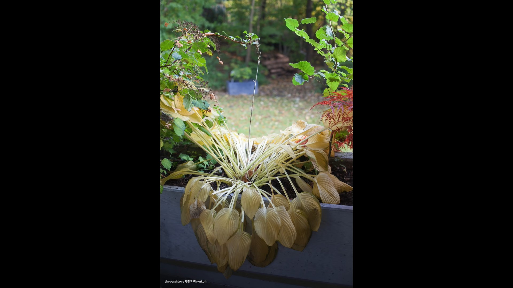

Hypertext Markup Language (HTML)
"하지만 말이야, <나는 어떤 추상적 미덕이나 일종의 경계를 생각하듯이 자기를 생각할 수도 있어.>이 과거에 대한 인식이 나를 힘들게 한다. 심지어 그녀는 어떤 추억을 떠올리는 것처럼 말하지도 않는다. 그녀의 어조에는 이런 종류의 일에 어울리는 측은하고도 가벼운 뉘앙스가 없다. 마치 오늘 일, 기껏해야 어제 일을 얘기하는 것 같다. 그녀는 과거의 의견, 고집, 앙심, 같은 것을 아주 생생하게 간직하고 있다. 반면 내게는 모든 게 어떤 어렴풋한 시적 분위기에 잠겨 있어서, 어떤 양보라도 할 준비가 되어 있다.

내가 매번 자기의 얼굴을 구체적으로 떠올리는 것을 고맙게 생각해야하지 않을까?